|
UNIVERSIDAD ARGENTINA DE LA EMPRESA — UADE Facultad de Ingeniería y Ciencias Exactas · Departamento de Tecnología Informática MediConecta Sistema de gestión de turnos médicos sobre Jakarta EE 10 y WildFly Informe técnico final · Trabajo Práctico Obligatorio Final |
| Materia | Desarrollo de Aplicaciones II (3.4.218) |
| Proyecto | MediConecta |
| Entrega | Trabajo Práctico Obligatorio Final |
| Período | 2.º cuatrimestre 2026 |
| Integrantes | Facundo Sánchez Mateo Bellinzona Facundo Morán Tobías Bonomo Laureano Gómez Moreno |
| Repositorio | github.com/tobiasbonomo29/desarrollo-de-apps2 · rama integracion-final |
| Commit de referencia del código | eda4b02 (código verificado; la documentación se agrega en el commit siguiente) |
| Fecha | 20 de noviembre de 2026 |
[[INDICE]]
MediConecta es una aplicación web para administrar los turnos de una clínica. Reúne en una sola agenda la reserva, la cancelación y la atención de turnos, el padrón de pacientes y la disponibilidad de los profesionales, con cuatro roles (paciente, recepción, médico y administración). Está construida sobre Jakarta EE 10 y se despliega como un WAR en WildFly con PostgreSQL 16, mensajería JMS (ActiveMQ Artemis), integraciones SOAP y REST con sistemas de obras sociales y un asistente de IA que orienta al paciente sobre la especialidad que necesita.
La versión final integra el trabajo de las dos ramas paralelas del tercer checkpoint: se adoptó como base el código de Mateo Bellinzona (052aa90) y se incorporaron dos correcciones del commit 947ba9d de Facundo Morán (acceso a recursos ajenos con 403 y validación del documento). El historial de ambas ramas se conserva.
| 195 / 195 tests JUnit en verde |
95,0 % líneas · capa de negocio (82,6 % ramas) |
85 % mutation score PIT (338 / 396) |
148 / 148 verificaciones de humo en Docker Compose (CI) |
22,2 ms p95 bajo carga k6 (CI) |
Resultado. El código integrado compila, pasa Checkstyle, los 195 tests, los umbrales de cobertura y de mutación, la verificación de migraciones y el escaneo de secretos, tanto localmente como en GitHub Actions. La prueba de sistema en GitHub Actions levantó la aplicación completa con Docker Compose (PostgreSQL, migraciones Flyway y WildFly) y pasó las 148 verificaciones de humo, la carga k6 (p95 22,2 ms, 0 % de errores con 20 usuarios) y el escaneo OWASP ZAP baseline (0 alertas que fallen; 3 advertencias informativas).
Pendientes que impiden declarar la entrega lista (detalle en §16): el Quality Gate de SonarCloud no se ejecutó (falta configurar el token); no hay pruebas E2E de interfaz automatizadas ni pruebas de integración con Testcontainers/Arquillian; faltan los criterios Gherkin de las historias de usuario originales, el estado de Jira, la firma de la declaración de IA, el merge a main y el tag de entrega; y el sistema no implementa reintento acotado ni circuit breaker frente a sistemas externos (sí timeout y fallback).
En muchas clínicas pequeñas y medianas los turnos se siguen gestionando por teléfono o con agendas en planillas separadas por profesional. El relevamiento del equipo identificó cuatro problemas concretos:
| Problema | Consecuencia | Respuesta de MediConecta |
|---|---|---|
| Turnos por teléfono | Líneas ocupadas; los horarios libres solo los conoce la recepción. | Reserva web guiada en 4 pasos, con los horarios reales de cada profesional. |
| Agendas en planillas | Superposiciones, turnos duplicados, falta de comunicación entre paciente y médico. | Una agenda única; el sistema rechaza superposiciones y fechas pasadas. |
| Sin confirmación | El paciente no recibe aviso y el médico no sabe quién viene. | Avisos asincrónicos por JMS al confirmar (paciente, recordatorio y agenda del médico). |
| ¿A qué médico voy? | Pacientes que no saben qué especialidad necesitan. | Asistente de IA que sugiere una especialidad sin diagnosticar. |
El objetivo académico del trabajo es aplicar sobre ese dominio los contenidos de la materia: componentes EJB con y sin estado, transacciones y seguridad declarativas, persistencia JPA, integración por SOAP, REST y mensajería, resiliencia, pruebas automatizadas y uso responsable de IA.
Construir un sistema de turnos médicos multiusuario, seguro y resiliente sobre la plataforma Jakarta EE, con evidencia ejecutable de su calidad.
| Funcionalidad | Estado | Dónde |
|---|---|---|
| Inicio de sesión con JWT y cuatro roles | Implementada | RecursoAutenticacion, ServicioAutenticacion, ServicioJwt |
| Reserva directa y reserva guiada en 4 pasos | Implementada | FachadaReservas, AsistenteReservaTurno |
| Cancelar, atender y archivar turnos (patrón State) | Implementada | GestionTurnos, modelo.estado |
| Padrón de pacientes, ficha e historial | Implementada | GestionPacientes |
| Profesionales y disponibilidad semanal | Implementada | GestionProfesionales |
| Validación de cobertura (SOAP / REST) | Implementada | GestorCobertura y adaptadores |
| Avisos asincrónicos por JMS con DLQ | Implementada | NotificadorTurnos, MDB, GestionNotificaciones |
| Asistente de IA para elegir especialidad | Implementada | GestorOrientacion, AdaptadorIaGroq |
| Tablero del día | Implementada | RecursoTablero, FachadaReservas.resumenDelDia |
| Envío real de mails/SMS | Fuera de alcance | Los avisos se registran en notificaciones; no hay proveedor real. |
| Id | Caso de uso | Actor | Flujos alternativos y de error verificados |
|---|---|---|---|
| CU-01 | Reservar un turno (alta directa) | Paciente, Recepción, Admin | Horario ocupado (400), fecha pasada (400), documento ajeno (403), clave repetida |
| CU-02 | Reservar con el asistente guiado | Paciente, Recepción, Admin | Volver un paso, abandonar, expiración a los 30 min |
| CU-03 | Cancelar un turno | Todos (con propiedad) | Turno ajeno (403), ya cancelado (409), ETag viejo (412) |
| CU-04 | Archivar un turno cancelado | Recepción, Admin | Turno no cancelado (409), rol no habilitado (403) |
| CU-05 | Consultar historial de un paciente | Todos (con propiedad) | Historial ajeno (403), paciente inexistente (404) |
| CU-06 | Gestionar profesionales y disponibilidad | Admin, Recepción, Médico | Médico sobre agenda ajena (403), rol sin permiso (403) |
| CU-07 | Validar la cobertura (obra social) | Todos (con propiedad) | Sistema externo lento o caído → fallback con aviso |
| CU-08 | Ver el tablero de la clínica | Recepción, Médico, Admin | Paciente (403) |
| CU-09 | Recibir avisos de confirmación y recordatorio | Sistema (asincrónico) | Mensaje repetido (un solo aviso), mensaje inválido (DLQ) |
La relación completa requisito → componente → test está en la matriz de trazabilidad (§15). Todos los requisitos funcionales RF-01 a RF-13 tienen al menos un test unitario y una verificación de humo; RF-14 (interfaz por rol) solo tiene verificación manual.
MediConecta es un único WAR (mediconecta.war) desplegado en WildFly con el perfil standalone-full, necesario para JMS. La aplicación se organiza en tres capas —presentación, negocio y datos— más servicios transversales de seguridad, mensajería, integraciones e IA. Cada capa depende solo de la inferior: los recursos JAX-RS no acceden a JPA y los EJB de negocio dependen de interfaces de repositorio, no de EntityManager.
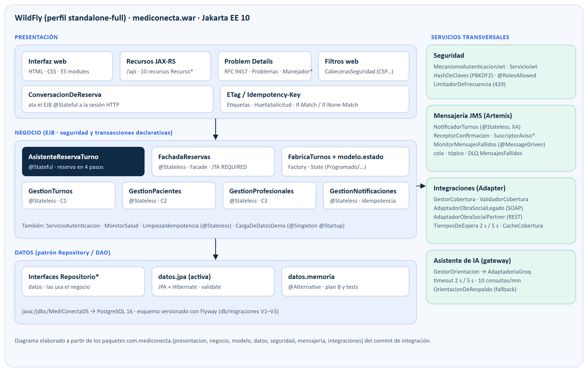
Figura 1. Arquitectura en capas, construida a partir de los paquetes del código integrado.
| Tecnología | Uso en el proyecto |
|---|---|
| Jakarta EE 10 (EJB, CDI, JPA, JAX-RS, JAX-WS, JMS, Security) | Única dependencia de compilación del WAR: jakarta.jakartaee-api con alcance provided. |
| WildFly (standalone-full) | Servidor de aplicaciones; datasource, mensajería, seguridad y propiedades se configuran con scripts CLI (scripts/wildfly/, docker/). |
| PostgreSQL 16 + Flyway | Persistencia; el esquema lo definen las migraciones V1–V3 y Hibernate solo lo valida. |
| ActiveMQ Artemis (embebido) | Cola de confirmaciones, tópico de recordatorios y DLQ MensajesFallidos. |
| JWT HS256 + PBKDF2-HMAC-SHA256 | Autenticación sin estado y hash de contraseñas (120 000 iteraciones, sal por usuario). |
| HTML, CSS y JavaScript (ES modules) | Interfaz sin framework; tipografía Inter servida desde el propio sitio. |
| Groq (API compatible con OpenAI) | Proveedor del modelo de lenguaje del asistente. |
| Maven Wrapper 3.9.9, JUnit 5, JaCoCo, PIT, Checkstyle | Build reproducible y control de calidad. |
| Docker / Docker Compose, GitHub Actions, gitleaks, k6, OWASP ZAP | Despliegue reproducible y pipeline de CI. |
| Componente | Tipo | Responsabilidad |
|---|---|---|
| C1 GestionTurnos | EJB @Stateless | Agenda, superposición, transiciones del turno y propiedad. |
| C2 GestionPacientes | EJB @Stateless | Padrón, ficha, historial, validación de documento. |
| C3 GestionProfesionales | EJB @Stateless | Profesionales, disponibilidad y horarios libres. |
| C4 AsistenteReservaTurno | EJB @Stateful (timeout 30 min) | Conversación de reserva en 4 pasos; recuerda lo elegido entre pedidos. |
| C5 Notificaciones | NotificadorTurnos @Stateless + 4 MDB @MessageDriven | Publica eventos del turno y los consume de forma idempotente. |
| C6 Obras sociales | GestorCobertura y adaptadores @Stateless; CacheCobertura CDI @ApplicationScoped | Valida la cobertura por SOAP o REST con timeout y fallback. |
| C7 Orientación con IA | GestorOrientacion y AdaptadorIaGroq @Stateless | Gateway hacia el modelo de lenguaje, con límites y fallback. |
| FachadaReservas | EJB @Stateless | Punto único de reserva (REST y asistente); transacción REQUIRED. |
No todos los componentes de integración son sesión sin estado: los consumidores de mensajes son @MessageDriven, la caché de cobertura y el limitador de frecuencia son beans CDI de alcance de aplicación, y la carga de datos de demostración es un @Singleton @Startup.
| Patrón | Clases reales | Problema que resuelve |
|---|---|---|
| State | modelo.estado.EstadoDelTurno, TurnoProgramado, TurnoAtendido, TurnoCancelado, TransicionInvalidaException | Cada estado decide qué transiciones admite. Atender un turno cancelado o cancelar dos veces lanza TransicionInvalidaException, que la API traduce a 409. Evita condicionales dispersos sobre el campo estado. |
| Facade | negocio.FachadaReservas | Una sola puerta para reservar, usada por RecursoTurnos y por el asistente; coordina pacientes, turnos, idempotencia y avisos dentro de una transacción. |
| Factory | negocio.FabricaTurnos | Todo turno nace PROGRAMADO, con la fecha redondeada al minuto y una especialidad coherente con el profesional. |
| Adapter | integraciones.ValidadorCobertura, AdaptadorObraSocialLegado (SOAP), AdaptadorObraSocialPartner (REST), AdaptadorIaGroq | Sistemas externos con contratos distintos quedan detrás de una interfaz propia; el negocio no conoce WSDL, JSON del partner ni el formato del proveedor de IA. |
| Repository / DAO | datos.Repositorio*, datos.jpa.*, datos.memoria.* | El negocio depende de interfaces; la implementación JPA es la activa y la de memoria es una @Alternative que permite los tests sin base y el “plan B”. |
| Gateway | integraciones.GestorOrientacion | Centraliza el acceso al servicio de IA: validación, límite de uso, filtro de especialidades y fallback. |
| Operación | Paciente | Recepción | Médico | Admin |
|---|---|---|---|---|
| Reservar turno | solo propio | sí | no | sí |
| Ver agenda completa y tablero | no (403) | sí | sí | sí |
| Ver / cancelar turno | solo propios | sí | su agenda | sí |
| Atender turno | no | no | su agenda | sí |
| Archivar turno cancelado | no | sí | no | sí |
| Padrón de pacientes | solo su ficha | sí | consulta | sí |
| Alta de profesionales | no | no | no | sí |
| Definir disponibilidad | no | cualquiera | solo la propia | cualquiera |
| Mensajes fallidos (DLQ) | no | no | no | sí |
La autorización está en los EJB (@RolesAllowed) y no solo en la interfaz; la propiedad del recurso se comprueba en el negocio (§11.2).
Reserva guiada. El paciente elige la especialidad (o la describe al asistente de IA), luego el profesional, un horario libre según la disponibilidad real y confirma. El servidor recuerda cada paso en el EJB @Stateful; al confirmar delega en FachadaReservas, que valida, crea el turno y publica los avisos.
Gestión en recepción. La recepción consulta la agenda con buscador y filtros, abre el detalle de un turno y lo cancela o archiva; el médico registra la atención sobre su propia agenda.
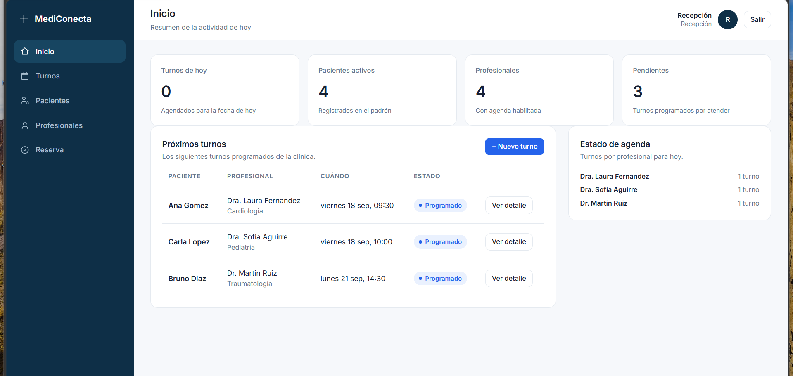 Figura 2. Tablero de recepción. |
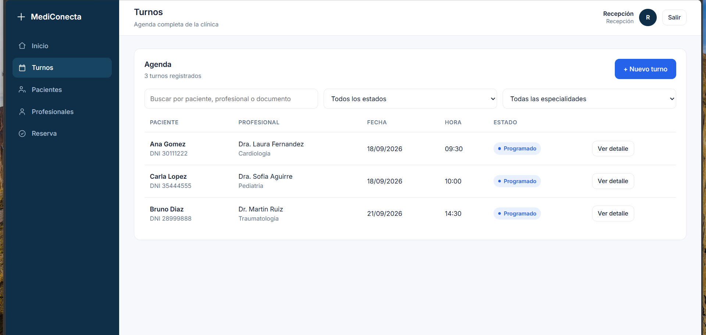 Figura 3. Agenda con buscador y filtros. |
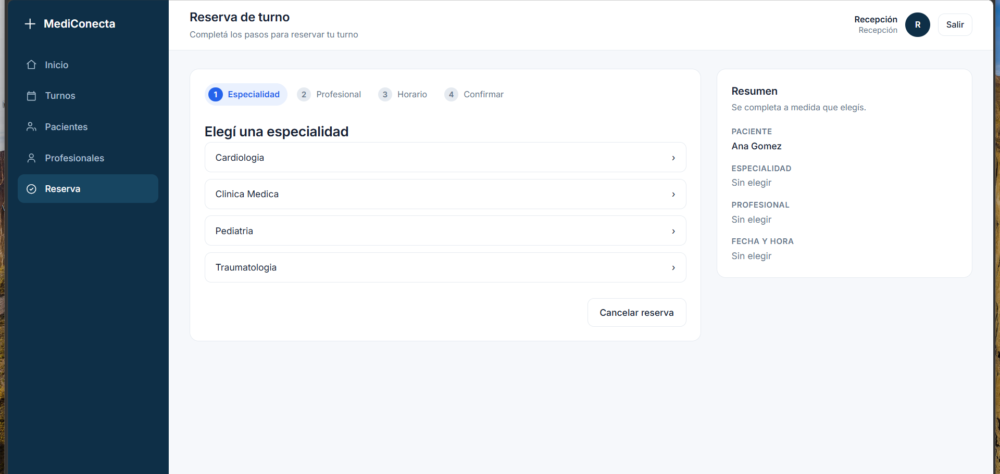 Figura 4. Reserva guiada: elección de especialidad. |
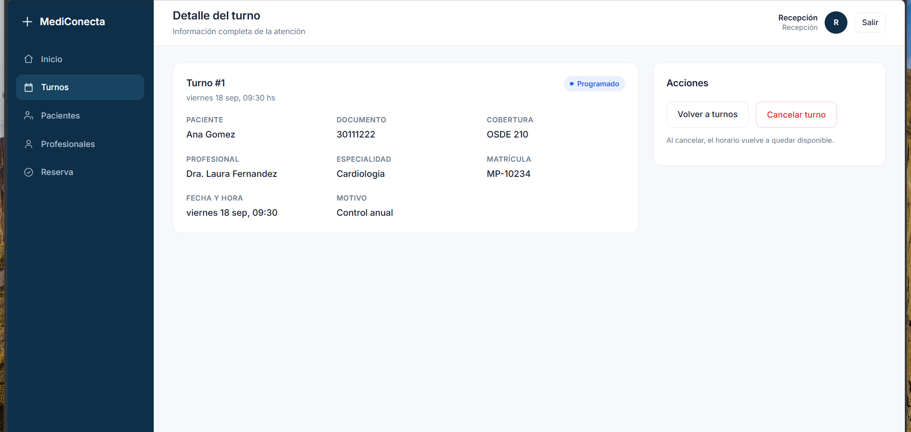 Figura 5. Detalle del turno con acciones por rol. |
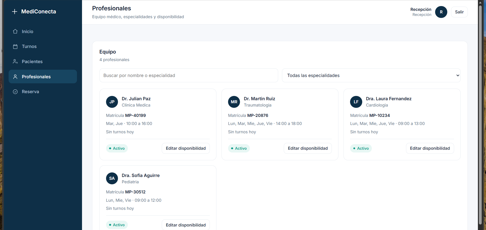 Figura 6. Profesionales y disponibilidad. |
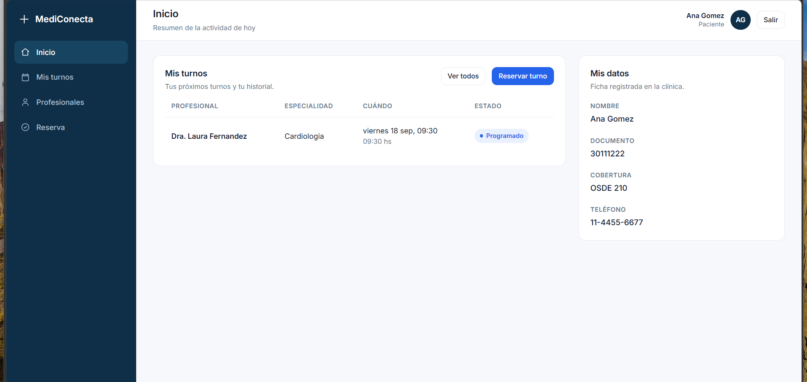 Figura 7. Inicio del rol paciente. |
El esquema se versiona con Flyway en db/migraciones (V1 esquema inicial, V2 índices, notificaciones, mensajes fallidos y claves de idempotencia, V3 columna version para ETag). Hibernate arranca con hbm2ddl.auto=validate: si falta una migración, el despliegue falla en lugar de alterar tablas.
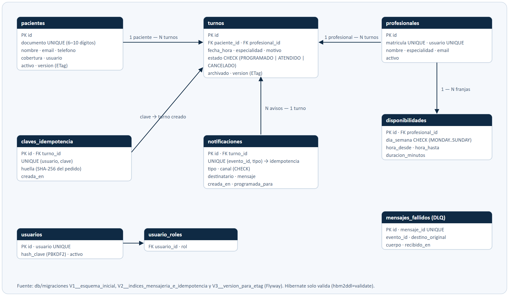
Figura 8. Entidades, relaciones y restricciones según las migraciones V1–V3.
| Restricción | Para qué sirve |
|---|---|
| uk_pacientes_documento | El documento es la clave de negocio que aparece en las URLs de la API. |
| turnos_estado_check | Solo los tres estados del patrón State. |
| uk_notificaciones_evento_tipo | Un mismo evento genera un solo aviso de cada tipo: base del consumidor idempotente. |
| uk_claves_idempotencia_usuario_clave | Una Idempotency-Key por usuario crea un único turno. |
| uk_mensajes_fallidos_mensaje | Un mensaje de la DLQ se registra una sola vez. |
| Columna version (turnos, pacientes) | Bloqueo optimista JPA y valor del ETag. |
La API se publica bajo /mediconecta/api y está documentada en openapi.json (34 rutas), visible en api-docs.html. El test ContratoOpenApiTest rompe el build si un endpoint real no está documentado o viceversa.
| Método | Ruta | Roles | Respuesta y errores |
|---|---|---|---|
| POST | /api/auth/login | público | Token JWT; 401 credenciales inválidas; 429 tras 5 fallos |
| GET | /api/salud, /api/salud/vivo | público | Readiness (base y broker; 503 si caen) y liveness |
| GET | /api/turnos | Recepción, Médico, Admin | Agenda; 403 para Paciente |
| POST | /api/turnos | Paciente, Recepción, Admin | 201 + Location; 400 regla; 403 ajeno; Idempotency-Key |
| GET | /api/turnos/{id} | todos (propiedad) | ETag; 304 con If-None-Match; 403 ajeno; 404 |
| PUT | /api/turnos/{id}/cancelar|atender|archivar | según rol | 409 transición inválida; 412 If-Match viejo; 403 |
| GET/POST/PUT | /api/pacientes… | según rol | Padrón, ficha, historial y cobertura; 403 ajeno; 404 |
| GET/POST/PUT | /api/profesionales… | según rol | Alta (Admin), disponibilidad, horarios libres |
| varios | /api/reserva/* | Paciente, Recepción, Admin | Pasos del asistente @Stateful y orientación con IA |
| GET/POST | /api/mensajeria/* | Admin | Mensajes fallidos y mensaje defectuoso de demostración (202) |
POST /api/turnos acepta la cabecera Idempotency-Key (8 a 100 caracteres). FachadaReservas.reservarConClave guarda la clave por usuario junto con la huella SHA-256 del pedido: si se repite con el mismo cuerpo devuelve el mismo turno con Idempotent-Replayed: true; con otro cuerpo responde 422; si el primer pedido sigue en curso, 409. Las claves vencidas las borra LimpiezaIdempotencia.
Turnos y pacientes devuelven un ETag derivado de la columna version. If-None-Match igual produce 304; una modificación con If-Match desactualizado produce 412 y no cambia el recurso. Si dos transacciones chocan sin cabecera, el bloqueo optimista de JPA responde 409 modificacion-concurrente.
Todo error se responde como application/problem+json con type, title, status, detail e instance. Problemas traduce cada excepción a un TipoProblema; los errores inesperados no exponen trazas al cliente.
| Código | Tipo (urn:mediconecta:problema:…) | Cuándo |
|---|---|---|
| 400 | regla-negocio, pedido-invalido | Regla incumplida, JSON mal formado |
| 401 | no-autenticado, credenciales-invalidas | Token ausente o inválido; login fallido |
| 403 | acceso-denegado | Rol sin permiso (BFLA) o recurso ajeno (BOLA) |
| 404 | no-encontrado | Recurso inexistente |
| 409 | transicion-invalida, idempotencia-en-curso, modificacion-concurrente | Patrón State, clave en curso, conflicto JPA |
| 412 | precondicion-fallida | If-Match desactualizado |
| 422 | idempotencia-reutilizada | Misma clave con otro pedido |
| 429 | demasiadas-solicitudes | Fuerza bruta en login o abuso del asistente de IA |
| 502 / 504 | integracion-externa, tiempo-agotado | Falla o timeout de un sistema externo sin fallback |
El sistema legado de obras sociales se publica en la propia aplicación como servicio JAX-WS de simulación (ServicioObraSocialLegadoImpl, contrato en wsdl/ServicioObraSocialLegado.wsdl). AdaptadorObraSocialLegado lo consume para PAMI, OSDE e IOMA, con timeouts de conexión (2 s) y respuesta (5 s) cargados en el contexto del cliente JAX-WS. Las demás obras sociales se consultan por REST al partner simulado (RecursoPartnerCobertura). Un fault o timeout no llega crudo al usuario: se aplica el fallback de §10.3.
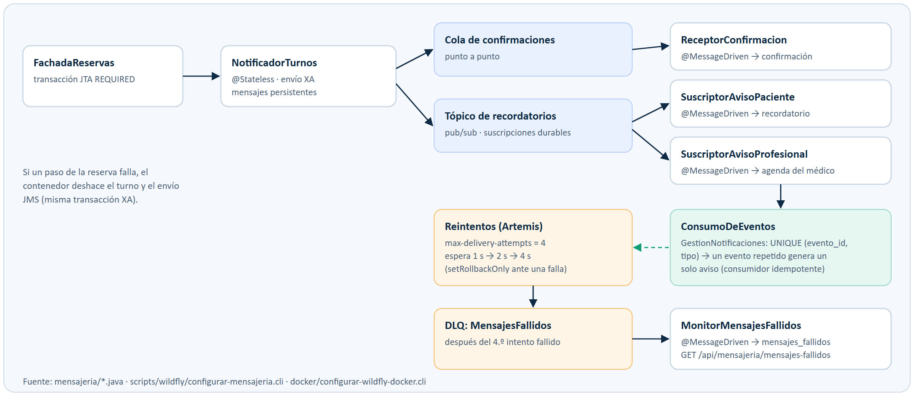
Figura 9. Flujo de mensajería: publicación transaccional, consumidores idempotentes, reintentos y DLQ.
Al confirmar un turno, NotificadorTurnos envía un mensaje persistente a la cola de confirmaciones y otro al tópico de recordatorios, dentro de la misma transacción XA que guarda el turno: si algo falla, el contenedor deshace ambos. El tópico tiene dos suscripciones durables (paciente y profesional), de modo que un consumidor detenido recibe los mensajes al volver.
Los tres consumidores delegan en ConsumoDeEventos/GestionNotificaciones, que registra cada aviso con la restricción única (evento_id, tipo): una entrega repetida no genera un segundo aviso. Ante una falla el MDB marca setRollbackOnly y Artemis reintenta. La versión final hace 4 intentos (la entrega original y 3 reintentos, con esperas de 1, 2 y 4 s; antes, en 947ba9d, eran 3); luego el mensaje pasa a la DLQ MensajesFallidos, donde MonitorMensajesFallidos lo registra y el administrador lo consulta por la API.
| Dependencia | Timeout | Fallback si falla o tarda |
|---|---|---|
| SOAP legado / REST partner | conexión 2 s · respuesta 5 s (TiemposDeEspera, configurables) | Último resultado bueno de CacheCobertura; si no hay, cobertura “a verificar” con contingencia: true. |
| Proveedor de IA | conexión 2 s · lectura 5 s | OrientacionDeRespaldo por palabras clave (también detecta urgencias). |
| Base de datos | consultas ≤ 5 s (persistence.xml) | Error 5xx en Problem Details; /api/salud informa DOWN. |
| Escenario (Criterios de Testing) | Estado | Evidencia |
|---|---|---|
| SOAP: respuesta válida, fault de negocio y técnico | PARCIAL | Respuesta válida y caída/timeout cubiertos (FallbacksTest, humo COBERTURA). No hay un test específico de fault de negocio SOAP. |
| Externo no responde en 5 s | PARCIAL | Timeout efectivo y fallback comunicado (contingencia) verificados en tests. No hay reintento acotado ni circuit breaker: existían en 947ba9d (ProteccionIntegracion) pero no en la base adoptada. |
| Broker apagado y vuelto a levantar | MANUAL | Procedimiento documentado y ejecutado por M. Bellinzona el 19/11 (turno 61 confirmado 15 s después del reinicio). No reejecutado sobre la versión integrada. |
| Mensaje duplicado | CUMPLE | GestionNotificacionesTest.elMismoEventoDosVecesGeneraUnSoloAviso |
| Mensaje inválido → DLQ | CUMPLE | ConsumoDeEventosTest; humo MENSAJERIA en CI. |
| Falla a mitad de la transacción | CUMPLE | Transacción JTA REQUIRED + envío XA; tests de FachadaReservasTest. |
| POST repetido con Idempotency-Key | CUMPLE | FachadaReservasTest; humo IDEMPOTENCY-KEY. |
| ETag desactualizado → 412 | CUMPLE | EtiquetasTest, GestionTurnosTest; humo ETAG. |
| Errores en Problem Details | CUMPLE | ProblemasTest; humo PROBLEM DETAILS. |
| Carga: 50 usuarios, 5 min, p95 < 500 ms | PARCIAL | k6 en CI: 20 usuarios virtuales durante 45 s sobre 7 endpoints (salud, agenda, padrón, tablero, profesionales, horarios, ficha): 9467 pedidos, p95 22,18 ms, 0 % de errores. El escenario exigido (50 usuarios, 5 min) no se ejecutó. |
MecanismoAutenticacionJwt (Jakarta Security) valida en cada pedido un JWT HS256 firmado con un secreto de al menos 32 bytes que se configura por entorno (MEDICONECTA_JWT_SECRETO); el código no tiene secreto por defecto. Se rechazan firma alterada, alg:none, emisor ajeno, token mal formado y vencido (401). Las contraseñas se guardan con PBKDF2-HMAC-SHA256, 120 000 iteraciones y sal por usuario.
BFLA. Cada método público de los EJB declara @RolesAllowed; un rol sin permiso recibe 403 (EJBAccessException → acceso-denegado).
BOLA/IDOR. La propiedad se controla en el negocio: un paciente solo accede a su ficha, sus turnos, su historial y su cobertura; un médico solo atiende, cancela o cambia la disponibilidad de su propia agenda. Cambio de la integración: la base de Bellinzona respondía 400 en estos casos; los Criterios de Testing exigen 403 o 404. Se incorporó de 947ba9d la excepción AccesoDenegadoException, ahora mapeada a 403 en Problemas, con tests nuevos en ProblemasTest y GestionPacientesTest y el humo actualizado.
ServicioAutenticacion con LimitadorDeFrecuencia: tras 5 fallos para un mismo usuario o 30 desde un mismo origen en 5 minutos responde 429 con Retry-After. El asistente de IA admite 10 consultas por minuto por usuario.
CabecerasSeguridad agrega Content-Security-Policy (estricta en pantallas y default-src 'none' en la API), X-Content-Type-Options: nosniff, X-Frame-Options: DENY, Strict-Transport-Security cuando el pedido llega por HTTPS y Cache-Control: no-store en la API. La cookie de sesión es HttpOnly y SameSite=Strict. La página de documentación de la API (Swagger UI desde jsDelivr) usa una CSP propia más permisiva.
| Prueba (eje D) | Estado | Evidencia |
|---|---|---|
| BOLA/IDOR (403/404) | CUMPLE | Humo “seguridad en vivo” (403) en CI; GestionTurnosTest, GestionPacientesTest |
| BFLA (403) | CUMPLE | Humo SEGURIDAD en CI |
| JWT vencido, alterado, alg=none, otro emisor (401) | CUMPLE | ServicioJwtTest, MecanismoAutenticacionJwtTest, humo |
| Mass assignment | PARCIAL | DTO de entrada; sin test dedicado |
| Inyección SQL / XSS | CUMPLE | Humo: SQL en búsqueda, ruta y login; XSS almacenado devuelto como JSON |
| XXE en el canal SOAP | NO VERIFICABLE | No hay prueba que envíe una entidad externa al servicio SOAP |
| Fuerza bruta → 429 | CUMPLE | ServicioAutenticacionTest, LimitadorDeFrecuenciaTest, humo |
| OWASP ZAP (baseline + activo autenticado) | PARCIAL | Baseline pasivo en CI: 65 reglas PASS, 0 FAIL, 3 WARN informativas (comentarios sospechosos, contenido no almacenable, aplicación web moderna). No se ejecutó el escaneo activo autenticado. |
| Dependencias (Dependency-Check / Trivy / Snyk) | NO EJECUTADO | No hay escaneo SCA en el pipeline |
| Cabeceras, CORS y cookies | CUMPLE | CabecerasSeguridadTest; sin CORS habilitado |
| Logs y mensajes de error | CUMPLE | Sin trazas al cliente (ProblemasTest) |
| TLS y hash adaptativo | PARCIAL | PBKDF2 verificado (HashDeClavesTest); TLS depende del despliegue (HSTS solo bajo HTTPS) |
En el primer paso de la reserva, la opción “Prefiero escribirlo” abre un chat. El paciente cuenta qué le pasa y el asistente sugiere una especialidad entre las que tienen médicos activos, con un botón para elegirla; la persona decide. Si detecta una urgencia, indica llamar al 107 (SAME) o al 911 en lugar de pedir un turno.
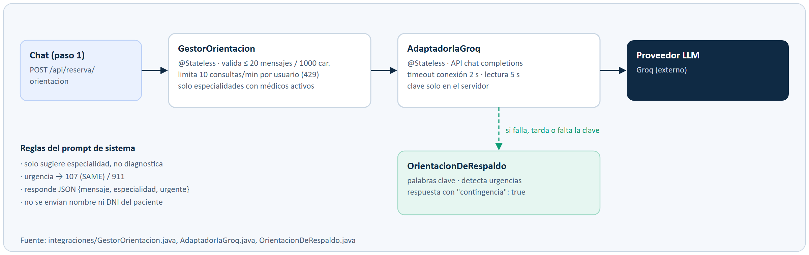
Figura 10. Gateway de IA: validación, límites, adaptador del proveedor y fallback.
| Prueba | Tipo | Resultado verificable |
|---|---|---|
| AdaptadorIaGroqTest (7), GestorOrientacionTest (5), FallbacksTest (8) | Unitarias, proveedor simulado | Pasan en local y en CI: formato del pedido, respuestas inválidas, límites, fallback. |
| Humo “ASISTENTE DE IA” en CI | Sistema, sin clave | Verifica que sin proveedor responda el respaldo sin romper el flujo. |
| pruebas/ia/evaluar-ia.sh con casos.json (12 casos: orientación, urgencias, prompt injection directa e indirecta, fuera de dominio, especialidades inexistentes; umbral 80 %) | Proveedor real | Según la documentación de M. Bellinzona (19/11): 11/12 en la primera corrida (un caso mal planteado) y 12/12 tras corregir el caso. La salida de esa corrida no está versionada y no se reejecutó sobre la versión integrada (requiere la clave del proveedor). |
| Nivel | Herramienta | Qué cubre |
|---|---|---|
| Unitario | JUnit 5; EJB como objetos con repositorios en memoria | Reglas de negocio, State (parametrizado), Facade, asistente, idempotencia, consumidores JMS, Problem Details, JWT, limitador, fallbacks |
| Contrato | ContratoOpenApiTest | OpenAPI publicado vs. endpoints reales |
| Cobertura y mutación | JaCoCo, PIT | Umbrales que cortan el build |
| Migraciones | Flyway sobre PostgreSQL en CI | Esquema desde cero e idempotente |
| Sistema / E2E de API | scripts/smoke-test.sh (bash + curl + jq) contra Docker Compose | Flujos de todos los recursos, seguridad en vivo, resiliencia |
| Carga | k6 (pruebas/carga/carga.js) | p95 y tasa de error en endpoints críticos |
| Seguridad | Humo + OWASP ZAP baseline + gitleaks | Eje D |
| IA | Unitarias + evaluar-ia.sh | Eje E |
| Aceptación / exploratoria | Manual de usuario | Recorrido por rol (manual) |
| Paquete | Tests | Clases de test destacadas |
|---|---|---|
| negocio | 88 | FachadaReservasTest (15), GestionTurnosTest (14), GestionNotificacionesTest (12), AsistenteReservaTurnoTest (11) |
| integraciones | 29 | FallbacksTest (8), AdaptadorIaGroqTest (7), TiemposDeEsperaTest (6) |
| seguridad | 27 | ServicioJwtTest (10), CabecerasSeguridadTest (6), HashDeClavesTest (5) |
| presentacion | 24 | ProblemasTest (12), ContratoOpenApiTest (5) |
| mensajeria | 16 | ConsumoDeEventosTest (8), EventoTurnoTest (8) |
| modelo.estado | 11 | EstadoDelTurnoTest (transiciones válidas e inválidas) |
| Total | 195 | 0 fallas, 0 errores, 0 omitidos (local y CI) |
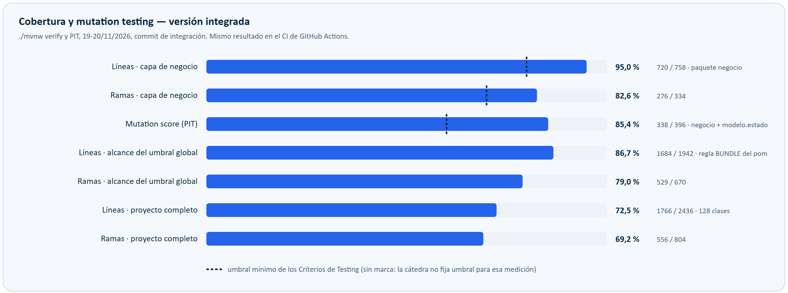
Figura 11. Cobertura y mutation score frente a los umbrales de los Criterios de Testing.
Las cifras miden alcances distintos y no deben mezclarse: los Criterios de Testing fijan el umbral sobre la capa de negocio (paquete negocio: 95,0 % de líneas y 82,6 % de ramas) y el mutation score sobre el dominio (PIT sobre negocio y modelo.estado: 85 %). El pom agrega una regla propia de 80 % de líneas sobre un alcance que excluye recursos REST, JPA, simuladores y adaptadores SOAP (86,7 %). Sobre el proyecto completo la cobertura es 72,5 % de líneas y 69,2 % de ramas.
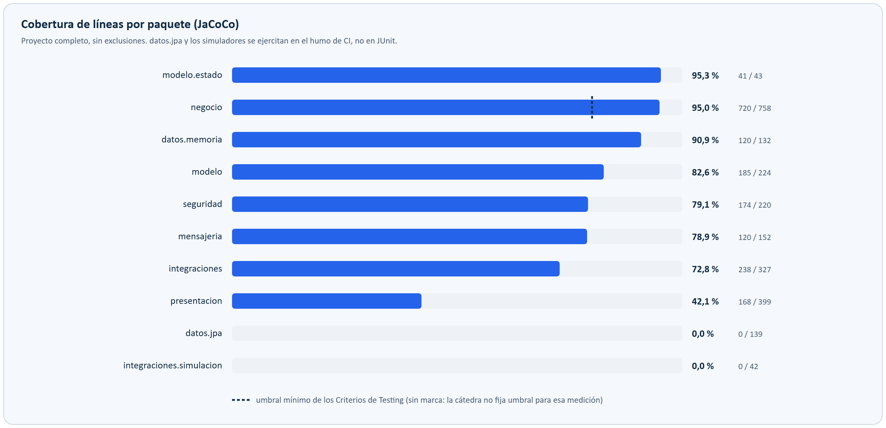
Figura 12. Cobertura de líneas por paquete (sin exclusiones).
| Prueba | Resultado sobre la versión integrada |
|---|---|
| Humo en Docker Compose (CI) | 148 verificaciones OK, 0 fallidas (salud, cabeceras, contrato, seguridad, Problem Details, profesionales, pacientes, turnos, Idempotency-Key, ownership, State, cobertura, asistente, mensajería/DLQ, seguridad en vivo, ETag, asistente de IA). |
| Carga k6 (CI) | 20 VUs, rampa 10 s + 30 s + 5 s; 9467 pedidos (209 req/s); p95 22,18 ms (umbral 500 ms); 0 % de errores; 100 % de checks. No alcanza el escenario de 50 usuarios × 5 min de la cátedra. |
| OWASP ZAP baseline (CI) | Baseline pasivo: 0 FAIL, 3 WARN informativas, 65 PASS. Sin escaneo activo autenticado. |
| gitleaks (CI) | 0 hallazgos en 36 commits. |
| Migraciones (CI) | 3 migraciones aplicadas sobre base vacía; segunda corrida sin cambios. |
| Id | Severidad | Defecto | Corrección y prueba |
|---|---|---|---|
| D-01 | Crítico | IDOR: un paciente podía leer turnos ajenos | GestionTurnos; GestionTurnosTest, humo |
| D-02 | Crítico | BOLA: un paciente podía leer fichas ajenas | consultarFicha; GestionPacientesTest, humo |
| D-03 | Crítico | Secreto JWT y contraseña demo en el código | Configuración por entorno; ServicioJwtTest |
| D-04 | Mayor | Los MDB se tragaban errores y perdían mensajes | Rollback + reintentos + DLQ; ConsumoDeEventosTest |
| D-05 | Mayor | @Remove del asistente fallaba al vencer la sesión | @PermitAll en finalizar(); revisión de log |
| D-06 | Menor | Sin timeouts, un externo colgado retenía hilos | Timeouts + fallback; FallbacksTest |
| D-07 | Mayor | Acceso a recurso ajeno devolvía 400 en vez de 403/404 (incumplía eje D) | Integración: AccesoDenegadoException; ProblemasTest, humo |
| D-08 | Mayor | Documento con {x} provocaba 500; el padrón aceptaba <script> | Integración: formato 6–10 dígitos; GestionPacientesTest |
| D-09 | Bloqueante (CI) | La integración dejó mvnw sin permiso de ejecución: el CI fallaba | Permiso restaurado (9c4a39e); CI en verde |
| D-10 | Menor | Una verificación del humo seguía esperando 400 | Expectativa corregida (eda4b02) |
Defectos abiertos conocidos: ninguno bloqueante ni crítico. Quedan como brechas de cumplimiento (no como defectos del código) las listadas en §16. El registro completo está en documentacion-final/Registro_de_Defectos.md; debe reflejarse en Jira.
Run de GitHub Actions: https://github.com/tobiasbonomo29/desarrollo-de-apps2/actions/runs/44658335940. Resúmenes y datos crudos en documentacion-final/evidencias/ (reportes de surefire, jacoco.csv, resumen de PIT, logs de CI).
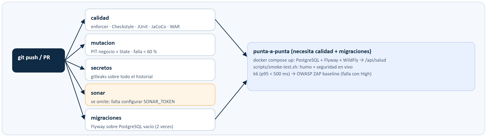
Figura 13. Jobs del pipeline .github/workflows/ci.yml (en cada push y pull request).
| Job | Estado | Detalle (run #4) |
|---|---|---|
| calidad | Ejecutado ✔ | enforcer, Checkstyle, 195 tests, JaCoCo con umbrales, WAR |
| mutacion | Ejecutado ✔ | PIT 85 % (338/396), mínimo 60 % |
| secretos | Ejecutado ✔ | gitleaks 8.21.2, 0 hallazgos |
| migraciones | Ejecutado ✔ | Flyway V1–V3 sobre PostgreSQL vacío, dos veces |
| punta-a-punta | Ejecutado ✔ | Docker Compose; humo 148/148; k6 p95 22,18 ms; ZAP baseline 0 FAIL |
| sonar | No ejecutado | El job termina “success” pero omite el análisis: falta el secreto SONAR_TOKEN y las variables de organización y proyecto. No hay Quality Gate aprobado. |
| Id | Requisito | CU | Componente | Tests | Estado |
|---|---|---|---|---|---|
| RF-01 | Iniciar sesión y obtener JWT | — | RecursoAutenticacion, ServicioAutenticacion, ServicioJwt | ServicioAutenticacionTest, ServicioJwtTest, humo | ✔ |
| RF-02 | Ver la agenda | CU-08 | GestionTurnos | GestionTurnosTest, humo | ✔ |
| RF-03 | Reservar turno directo | CU-01 | FachadaReservas, FabricaTurnos | FachadaReservasTest, FabricaTurnosTest, humo | ✔ |
| RF-04 | Sin superposición ni fechas pasadas | CU-01 | GestionTurnos | GestionTurnosTest, humo | ✔ |
| RF-05 | Cancelar, atender y archivar (State) | CU-03, CU-04 | modelo.estado, GestionTurnos | EstadoDelTurnoTest, GestionTurnosTest, PIT, humo | ✔ |
| RF-06 | Reserva guiada @Stateful | CU-02 | AsistenteReservaTurno | AsistenteReservaTurnoTest, humo | ✔ |
| RF-07 | Padrón, ficha e historial | CU-05 | GestionPacientes | GestionPacientesTest, humo | ✔ |
| RF-08 | Profesionales y disponibilidad | CU-06 | GestionProfesionales | GestionProfesionalesTest, humo | ✔ |
| RF-09 | Validar cobertura SOAP/REST | CU-07 | GestorCobertura, adaptadores | GestorCoberturaTest, FallbacksTest, TiemposDeEsperaTest, humo | ✔ |
| RF-10 | Orientación con IA | CU-02 | GestorOrientacion, AdaptadorIaGroq | GestorOrientacionTest, AdaptadorIaGroqTest, FallbacksTest, evaluar-ia.sh | ◐ |
| RF-11 | Avisos al confirmar | CU-09 | NotificadorTurnos, MDB, GestionNotificaciones | ConsumoDeEventosTest, GestionNotificacionesTest, EventoTurnoTest, humo | ✔ |
| RF-12 | Tablero del día | CU-08 | FachadaReservas | FachadaReservasTest, k6 | ✔ |
| RF-13 | Mensajes fallidos (Admin) | CU-09 | RecursoMensajeria, MonitorMensajesFallidos | ConsumoDeEventosTest, humo | ✔ |
| RF-14 | Interfaz web por rol | todos | src/main/webapp | Recorrido manual; ZAP | ◐ |
◐ RF-10: la evaluación con proveedor real no tiene salida versionada. ◐ RF-14: sin pruebas automatizadas de interfaz. La matriz extendida, con requisitos no funcionales, está en documentacion-final/Matriz_de_Trazabilidad_Final.md. La trazabilidad hacia las HU originales y sus criterios Gherkin queda pendiente (§4).
Condiciones de admisibilidad (G1–G9) y ejes (A–E) según el documento oficial “Criterios de Testing y Aseguramiento de Calidad” (Clase 15). Se declara CUMPLE solo cuando hay evidencia ejecutada sobre la versión integrada.
| Condición | Estado | Evidencia y ubicación | Limitación / pendiente |
|---|---|---|---|
| G1 Build reproducible con un comando | CUMPLE en CI | En GitHub Actions, docker compose up -d --build levantó base, migraciones y WildFly desde cero y el humo pasó (run #4). | No verificado en una máquina Windows limpia (Docker no arrancó en la de verificación). |
| G2 Tag de release en main | PENDIENTE | No existe tag de entrega. El PDF pide v1.0-testing para la Clase 15; el equipo prevé v1.0-final. | Mergear a facu/main y crear el tag (decisión del equipo). |
| G3 CI en verde sobre el tag | VERDE (rama) | Run #4 sobre integracion-final. | Repetir sobre el tag; Sonar no se ejecuta. |
| G4 Plan, matriz, informe de ejecución y registro de defectos | LISTO PARA ENTREGAR | documentacion-final/ | Subir a Teams; falta especificación de casos con ≥ 40 % negativos documentada caso por caso. |
| G5 Jira actualizado | NO VERIFICABLE | Sin acceso a Jira desde el repositorio. | Cargar casos y defectos D-01…D-10 con estado y responsable. |
| G6 Sin secretos en el historial | CUMPLE con riesgo | gitleaks: 0 hallazgos en CI. | Secreto JWT de desarrollo antiguo en el historial (§11.6); trufflehog podría marcarlo. |
| G7 Demo en vivo | NO VERIFICABLE | Guion de demo y procedimientos en el plan de pruebas. | Se verifica en clase; ensayar con Docker Compose. |
| G8 Declaración de uso de IA | BORRADOR | documentacion-final/Declaracion_Uso_IA_Final.md | Completar prompts por integrante, caso de IA equivocada y firmas. |
| G9 Honestidad del informe | EN CURSO | Este informe declara brechas y defectos. | Contrastar con Jira. |
| Requisito | Estado | Evidencia | Pendiente |
|---|---|---|---|
| A · HU con ≥ 3 criterios Gherkin y MoSCoW | NO VERIFICABLE | Casos de uso con flujos alternativos (§4) | Cotejar con la entrega del diseño y Jira |
| A · ≥ 5 escenarios E2E automatizados (Cucumber/Playwright…) en CI | NO CUMPLE | El humo es E2E de API, no de interfaz | Agregar Playwright/Cypress |
| A · Responsive y accesibilidad ≥ 90 | NO VERIFICABLE | Captura móvil existente; sin Lighthouse/axe | Medir con Lighthouse |
| B · Cobertura negocio ≥ 80 % / ≥ 70 % | CUMPLE | 95,0 % / 82,6 % (CI) | — |
| B · Mutation score ≥ 60 % | CUMPLE | 85 % (CI) | — |
| B · Quality Gate Sonar | NO EJECUTADO | Job omitido | Configurar SonarCloud |
| B · Integración con BD y broker reales (Testcontainers/Arquillian) | NO CUMPLE | Repos y consumidores se prueban en memoria; la base real solo en humo/migraciones | Agregar Testcontainers |
| B · Colección de API versionada en CI | PARCIAL | smoke-test.sh en CI (no es Postman/REST Assured) | Confirmar con la cátedra |
| B · Contrato OpenAPI y WSDL | PARCIAL | ContratoOpenApiTest valida rutas; no valida respuestas ni WSDL | Schemathesis/SoapUI |
| B · Transiciones inválidas → 409 (parametrizado) | CUMPLE | EstadoDelTurnoTest, humo PATRON STATE | — |
| B · Pipeline ≤ 15 min y 0 flaky | PARCIAL | Run #4: 4 min 12 s en total. No se corrió la suite tres veces seguidas para descartar tests inestables. | Correr la suite 3 veces seguidas |
| C · Integración y resiliencia | PARCIAL | §10.4 | Reintento/circuit breaker; carga 50 usuarios × 5 min |
| D · Seguridad | PARCIAL | §11.7 | XXE, SCA, ZAP activo autenticado |
| E · Declaración y plan de IA | BORRADOR | Declaración final | Firmas y prompts |
| E · Testing de la IA (casos, injection, fuera de dominio, fallback) | PARCIAL | Casos definidos y unitarias en verde | Reejecutar con proveedor real y versionar salida |
| Problema | Decisión y justificación |
|---|---|
| Dos implementaciones paralelas del checkpoint 3 (Morán 947ba9d y Bellinzona 052aa90) con ~66 archivos en conflicto | Merge real que conserva ambos historiales. Se adoptó el código de Bellinzona porque es la base acordada y es más completo en infraestructura (Docker Compose, Flyway, Checkstyle, Sonar, humo en CI). Mezclar partes de dos subsistemas equivalentes (idempotencia, rate limiting, DLQ, fallback) habría duplicado beans y tablas. El detalle por archivo está en Informe_Integracion_y_Conflictos.md. |
| BOLA respondía 400 | Se incorporó la semántica de Morán (403) porque es la que exige la cátedra. |
| Documento sin validar | Se incorporó la validación de Morán, motivada por un hallazgo real de ZAP. |
| Circuit breaker de Morán vs. timeout + fallback de Bellinzona | No se portó: implicaba rediseñar los gestores de la base adoptada y la consigna pedía no modificar funcionalidades salvo errores de integración. Queda como brecha documentada. |
| DLQ: 3 intentos (Morán) vs. 4 con espera creciente (Bellinzona) | Queda la configuración de Bellinzona (4 intentos, 1-2-4 s). |
| Esquema por hbm2ddl=update vs. migraciones | Flyway + validate: el esquema es versionado y reproducible en CI. |
| Permiso de mvnw perdido al resolver en Windows | Se restauró el modo 755; regla: revisar modos de archivo en cada merge. |
MediConecta cumple los objetivos funcionales y de arquitectura del trabajo: componentes con y sin estado, Facade, State, Factory, Adapter y Repository aplicados a problemas concretos, transacción declarativa que abarca la base y la mensajería, integraciones SOAP y REST con timeout y fallback, mensajería confiable con idempotencia y DLQ, una API con Problem Details, Idempotency-Key y ETag, y un asistente de IA acotado y con respaldo.
En calidad, la versión integrada supera con margen los umbrales cuantitativos de cobertura (95,0 % / 82,6 % en negocio) y mutación (85 %), y el pipeline verifica de punta a punta el sistema desplegado con Docker Compose. La integración también dejó a la vista tres lecciones: verificar los códigos HTTP que fija la cátedra y no solo el tipo de excepción, probar datos de borde en cada campo que llega a una URL, y revisar los modos de archivo al resolver conflictos.
La entrega no debe declararse lista hasta resolver los pendientes de §16: Quality Gate de SonarCloud, E2E de interfaz y pruebas con contenedores, criterios Gherkin y Jira, declaración de IA firmada, evaluación de IA con evidencia, carga con 50 usuarios durante 5 minutos, y el merge y tag de release.
| Documento | Contenido |
|---|---|
| Informe_Integracion_y_Conflictos.md | Resolución archivo por archivo y justificación |
| Plan_de_Pruebas_Final.md | Estrategia, entornos, riesgos, criterios de entrada y salida, resultados |
| Matriz_de_Trazabilidad_Final.md | Requisitos → componentes → tests → estado |
| Registro_de_Defectos.md | D-01 a D-10 con severidad, causa raíz y evidencia |
| Informe_Seguridad_y_Calidad.md | Matriz SEC del eje D, secretos, calidad estática |
| Manual_Tecnico_y_Despliegue.md | Requisitos, configuración, despliegue y operación |
| Declaracion_Uso_IA_Final.md | Borrador pendiente de validación y firma |
| Checklist_Requisitos_Finales.md | G1–G9 y ejes A–E con acciones |
| README.md y evidencias/ | Índice, resultados verificados y salidas de build, cobertura, PIT y CI |
Manual de usuario vigente: docs/Manual_de_Usuario.md. Arquitectura detallada: docs/arquitectura.md. Casos de uso: docs/casos-de-uso.md. Material histórico de 947ba9d: docs/historico/entrega3-947ba9d/.